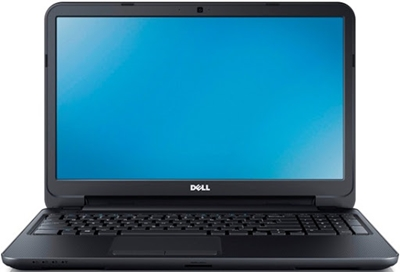
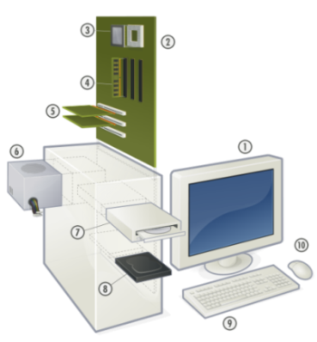

This site was created for my studies on Computer technologies, the aim is to provide connections to as much free study material as possible, I've tried to find the best material that I could find on the various subjects involved in studying computer technologies, to create a study site, where you can come on-line and find articles, instructional videos, and websites of interest. I hope Computer Studies achieves this aim.
I am now a Fully Qualified CompTIA A+ Technician and have passed the CIW (Certified Internet Webmaster) 1DO−510 Associate Certification and the CIW (Certified Internet Webmaster) 1DO−520 Professional Certification
The CompTIA A+ certification is the industry standard for computer support technicians. The international, vendor-neutral certification proves competence in areas such as installation, preventative maintenance, networking, security and troubleshooting. CompTIA A+ certified technicians also have excellent customer service and communication skills to work with clients.
Two exams are necessary to be certified: CompTIA A+ Core 1, exam code 220-1001 and CompTIA A+ Core 2, exam code 220-1002.
The Computing Technology Industry Association (CompTIA), a non-profit trade association, was created in 1982 as the Association of Better Computer Dealers, Inc. (ABCD) by representatives of five microcomputer dealerships. Over the course of a decade, ABCD laid the groundwork for many of CompTIA's initiatives and member benefits.
ABCD later changed its name to the Computing Technology Industry Association to reflect the association's evolving role in the computer industry and in the U.S. business landscape at large. The 1990s was a period of growth as the association broadened the scope of its activities to address the needs of the expanding computer industry. Its initiatives increased to include networking, UNIX, imaging, mobile computing, and multimedia arenas. In an effort to monitor and take positions on public policy issues, the association added a full-time Director of Public Policy position.
CompTIA is a provider of professional certifications for the information technology (IT) industry. CompTIA chairs and manages the Initiative for Software Choice.
If you're looking to learn about computers this is the site to visit, hours of free video tutorials on computers, A+ Certification, Network+ Certification, Security+ Certification, and loads more visit:
Malicious software includes Viruses - worms - bots - Trojan horses - spyware - adware - phishing attacks - browser helper objects (BHOs) collectively known as Greyware
When dealing with Grayware issues it's best to start by getting to know your computers startup processes before connecting to the internet, and by knowing the types of programs and software that initialize at startup, what processes run when you launch your web browser this will give you a good indication of what you should see in the task manager under the processes tab, after surfing the internet check if there are any new processes running, and by initializing a scan you can see if any infected files show up with your anti-virus, spyware and adware utilities, after scanning the computer any know infections can be checked in the task manager under the processes tab looking for the ones mentioned in the virus report.
The next place you can look is in the registry click on start - run and type in regedit this will take you to the registry where you can turn it off so it can't auto-start, the first thing to do in the registry editor is to go to file select export and make a copy of the registry to save a backup to the my documents folder just in case any changes that you make create problems and you can reverse the changes by using the backup.
Click on HKEY_LOCAL_MACHINE select software then select Microsoft then scroll down and select windows then select current version then scrolling to select run this shows you the processes running and you can look for the virus file, if the file is located in the temp folder it's a good indication that it's a virus once you've located the virus you can delete it.
Another place you can look is in msconfig to access this click start - run and type in msconfig this opens the system configuration tool and under the start-up tab check through the listing to find the infected file.
Using the command prompt to deal with viruses click start - run and type in cmd this opens the command line interface and from the command line type regsvr32/u and the filename of the infected file and press enter this should unregister the file from the directory and you should then be able to delete it.
Another way of dealing with an infected file is to use the cacls command once you've located the directories path using tools like Process explore or HijackThis and Google to double check that the file is not linked to anything that you want running anyway, from the command prompt change directories and go to the directory the file is located in and at the command line type (cacls the filename /p everyone: n) this should give the file no permissions to run at startup.
Viruses like to hide in the temporary folder and the users temporary folder click start - run and type in cleanmgr select the drive that the infected file is on usually the C drive this will delete your temporary files, temporary internet files and the recycle bin.
If you right-click on my computer and select explore select tools and then folder options click on the view tab select show hidden files and folders and uncheck hide extensions for known file types Usually .exe or .dll files and from the C drive select documents and settings the users name and then local settings and select the temp folder and delete the files you can also do this in Windows select the temp folder and delete the files.
Good protection is to make sure your firewall is on and working, get regular updates and security fixes from Microsoft and keep your anti-virus, spyware and adware utilities up to date with the latest definitions, it's always a good idea to make a note of the URL addresses of the web sites that you visit regularly this is more important if you are making any purchases from these sites and using a credit card etc. The utilities from sysinternals and HijackThis are worth checking out but it needs work on your part, google the virus files to gather the information needed to understand which are the correct proceedures to use before deleting too many processes.
Other places you can check on your computer would be the system32 folder where you can check the dates of the files installation to help narrow down your search, the temp folders are the places the file mostly reside usually .exe or .dll file extension, you can also check the prefetch folder it's another place that you can investigate but always make a backup before deleting any file and always do your research first.
Download and get autoruns from sysinternals, extract the file and rename autoruns.exe you might need to rename the file if the malware is blocking the installation, then download a Linux rescue CD you can use a live CD for this or the ultimatebootcd, burn the ISO file to disk then after identify the auto-starting malware files, to do this you run sysinternals autoruns and check the "hide signed Microsoft entries" and "verify code signatures", after scanning with autoruns use Google or another method to identify the malware, write down a list of the malware files, with the full pathname.
Boot the System Rescue CD you will then need to mount the windows drive An example would be using the command / dev/ sda1 this is the first partition of the first SATA or SCSI drive. If you have a different HDD setup, you need to use a different command / dev/ to mount the drive such as / dev/ hda1 is the first partition of the first PATA drive or / dev/ sdb3 is the third partition of the second SATA drive.
Then use the basic Linux commands " cd" to change the directory, " ls" to list the contents or the directory, and " rm" to delete the malware, reboot to windows and clean up the remaining infected files. Use autoruns to clear up the broken autostarts from the registry, and then run a full system scan with your favorite anti- virus and the malware should be removed!
You can download these utilities for free for your own personal use
AVG Anti-virus protection
Spybot Anti-spyware
Sysinternals the home page for utilities that assist in detecting Grayware
HijackThis a useful utility for checking for installed viruses
Links to websites that deal with virus problems
A list of good free Antirootkit tools
A site where you can upload a suspicious files for analysys
Some simple steps to check if you have been compromised
A list of excellent tutorials for protection and dealing with malicious subjects

Computer hardware is the collection of physical elements that comprise a computer system. Computer hardware refers to the physical parts or components of computer such as monitor, keyboard, hard disk, mouse, etc. Refers to objects that you can actually touch, like disks, disk drives, display screens, keyboards, printers, boards, and chips. In contrast, software is untouchable. Software exists as ideas, concepts, and symbols, but it has no substance. A combination of hardware and software forms a usable computing system.
A monitor or display (also called screen or visual display unit) is an electronic visual display for computers. The monitor comprises the display device, circuitry, and an enclosure. The display device in modern monitors is typically a thin film transistor liquid crystal display (TFT-LCD) thin panel, while older monitors use a cathode ray tube (CRT) about as deep as the screen size.
A motherboard (sometimes alternatively known as the mainboard, system board, planar board or logic board) is a printed circuit board (PCB) found in many modern computers which holds many of the crucial components of the system, such as the central processing unit (CPU) and memory, and provides connectors for other peripherals.
The central processing unit (CPU, occasionally central processor unit) is the hardware within a computer system which carries out the instructions of a computer program by performing the basic arithmetical, logical, and input/output operations of the system. The CPU plays a role somewhat analogous to the brain in the computer. The term has been in use in the computer industry at least since the early 1960s. The form, design, and implementation of CPUs have changed dramatically since the earliest examples, but their fundamental operation remains much the same.
Random access memory (RAM) is a form of computer data storage. A random access device allows stored data to be accessed in any order in very nearly the same amount of time for any storage location or size of memory device. A device such as a magnetic tape requires increasing time to access data stored on parts of the tape that are far from the ends. Memory devices (such as floppy discs, CDs and DVDs) can access the storage data only in a predetermined order, because of mechanical design limitations; the time to access a given part of the device varies significantly due to its physical location.
The expansion card (also expansion board, adapter card or accessory card) in computing is a printed circuit board that can be inserted into an expansion slot of a computer motherboard or backplane to add functionality to a computer system via the expansion bus.
A power supply unit (PSU) converts mains AC to low-voltage regulated DC power for the internal components of a computer. Modern personal computers universally use a switched-mode power supply. Some power supplies have a manual selector for input voltage, while others automatically adapt to the supply voltage.
In computing, an optical disc drive (ODD) is a disk drive that uses laser light or electromagnetic waves within or near the visible light spectrum as part of the process of reading or writing data to or from optical discs. Some drives can only read from discs, but recent drives are commonly both readers and recorders, also called burners or writers. Compact discs, DVDs, and Blu-ray discs are common types of optical media which can be read and recorded by such drives. Optical drive is the generic name; drives are usually described as "CD" "DVD", or "Blu-ray", followed by "drive", "writer", etc.
A hard disk drive (HDD; also hard drive, hard disk, or disk drive) is a device for storing and retrieving digital information, primarily computer data. It consists of one or more rigid (hence "hard") rapidly rotating discs (platters) coated with magnetic material, and with magnetic heads arranged to write data to the surfaces and read it from them.
In computing, a keyboard is a typewriter-style keyboard, which uses an arrangement of buttons or keys, to act as mechanical levers or electronic switches. Following the decline of punch cards and paper tape, interaction via teleprinter-style keyboards became the main input device for computers.
A mouse is a pointing device that functions by detecting two-dimensional motion relative to its supporting surface. Physically, a mouse consists of an object held under one of the user's hands, with one or more buttons.
Linux is an operating system kernel developed by Linus Torvalds in the early 1990s along with the addition of system tools developed by Richard Stallman for the GNU project and the free software foundation which provides free software applications like web browsers, office applications, and photographic editors etc, all of which are provided free under the general public licence agreement. There are now many different distributions of Linux, the Ubuntu distribution being further developed from the Debian distribution of the Linux operating system. Distrowatch has a database which demonstrates the staggering number and growth of the different distributions.
Ubuntu an African word "meaning humanity to others" or "I am what I am because of what we all are". The Ubuntu distribution brings the spirit of Ubuntu to the software world.
The Ubuntu community's home page is the ideal place to start to gain the knowledge and support of the Ubuntu distribution, you can download a free ISO image of the operating system to burn to CD/DVD to create a live CD.
There is another company behind Ubuntu called Canonical who founded and funded the Ubuntu distribution, there are regular distributions of new versions released every six months and there's long term security updates and support provided, this web site provides support documentation, a community run wiki-guide, a frequently asked questions page and a community run forum.
The Ubuntu versions are given different names with each new release the history so far is from the first release which was called Warty warthog followed by hoary hedgehog, breezy badger, dapper drake, edgy eft, feisty fawn, gutsy gibbon, hardy heron, intrepid ibex, jaunty Jackalope, karmic koala, lucid lynx, Maverick Meerkat, Natty Narwhal, Oneiric Ocelot and the latest Precise Pangolin.
There is also www.linuxquestions.org which provides advice and support, this web site provides support documentation, a hardware compatibility list, and advice on laptops and desktop computers that support the various Linux distributions.
X86 architecture, Pentium, Celeron, Athlon and Semperon, 64 bit AMD and Intel systems and Sun UltraSPARC based systems. You can run Ubuntu on 256 MB of RAM and 4 GB of hard drive space.
To burn the ISO image file to CD/DVD you need to use a disc burning utility that will convert an ISO file and extract the contents to be burnt to a CD/DVD disc, the original ISO file that you downloaded from the Ubuntu site is compressed and appears as one file so when you burn it to CD/DVD you need to check the contents, there should be lots of files on the CD/DVD instead of just the one file if it's been burnt and extracted properly, a free copy of Imgburn will do the job nicely you can obtain this at imgburn.com it's recommended to burn the CD at 20x speed to get an accurate copy, after successfully burning a Live CD of Ubuntu you need to make sure the computer you're going to use it on is adjusted in the BIOS setup to boot from the CD-ROM drive first.

Oracle's VirtualBox is basically a software program that allows you to install an operating system in a virtual PC environment, emulating a computer on your host computer; you can use the guest operating systems as you would normally as if they were installed directly on your PCs hard drive. With VirtualBox you can run more than one operating system at a time. This way, you can run software written for one operating system on another ( for example, Windows software on Linux or a Mac) without having to reboot to use it. Software manufactures use this program for testing beta versions of their products before general release on many different operating systems. You can use a VirtualBox feature called "snapshots", saving a particular state of a virtual machine and then reverting back to that state, if necessary. This way, you can freely experiment with a computing environment. If something goes wrong with an operating system such as it getting infected with a virus, you can easily switch back to a previous snapshot and avoid the need of frequent backups and restores.
Any number of snapshots can be created, allowing you to travel back and forward in virtual machine time, making this program great for trying out any ideas for troubleshooting problems with the various operating systems without having to alter your host PC (and best of all it's a free open source program, so it won't cost you anything to install)
Oracle VM VirtualBox (formerly Sun VirtualBox, Sun xVM VirtualBox and innotek VirtualBox) is an x86 virtualization software package, created by software company Innotek GmbH, purchased by Sun Microsystems, and now developed by Oracle Corporation as part of its family of virtualization products. Oracle VM VirtualBox is installed on an existing host operating system as an application; this host application allows additional guest operating systems, each known as a Guest OS, to be loaded and run, each with its own virtual environment.
Supported host operating systems include Linux, Mac OS X, Windows XP, Windows Vista, Windows 7, Windows 8, Solaris, and OpenSolaris; there is also a port to FreeBSD. Supported guest operating systems include versions and derivations of Windows, Linux, BSD, OS/2, Solaris and others. Since release 3.2.0, VirtualBox also allows limited virtualization of Mac OS X guests on Apple hardware, though OSX86 can also be installed using VirtualBox Since version 4.1, Windows guests on supported hardware can take advantage of the recently implemented WDDM driver included in the guest additions; this allows Windows Aero to be enabled along with Direct3D support.
The CompTIA A+ certification is the industry standard for computer support technicians. The international, vendor-neutral certification proves competence in areas such as installation, preventative maintenance, networking, security and troubleshooting. CompTIA A+ certified technicians also have excellent customer service and communication skills to work with clients.
If you're looking to learn about computers this is the site to visit, hours of free tutorials on computers, A+ Certification, Network+ Certification, Security+ Certification, Windows Certification, and loads more
Scott Mueller author of the upgrading and repairing PCs books, these are informative books on building and repairing PCs, regarded by many industry experts as the reference books to have in your collection.
Mike Meyers book is proberly the most entertaining book on the A+ Certification you'll find and another book you should add to your collection.
A link to some Harvard university video lectures on computer science.This course is all about understanding what's going on inside your computer. Through lectures on hardware, software, the Internet, multimedia, security, privacy, website development, programming, and more, this course "takes the hood off" of computers and the Internet.
Microsoft's help and support
A series of lectures by David Malan from Harvard University the lectures are on building dynamic websites, there is also a series of projects involved with the course which you'll find some PDF files that you can download from the website
Some great tutorial sites for learning how to write code
The World Wide Web Consortium (W3C)
Dreamweaver Tutorial, Step− by− Step Guide for Creating a Website Using Dreamweaver
A demonstration of what can be accomplished through CSS-based design
CSS tutorial site
A wide range of valuable data recovery presentations, podcasts, documents and articles to help you better understand hard drive data recovery
A wide range of valuable programming video tutorials